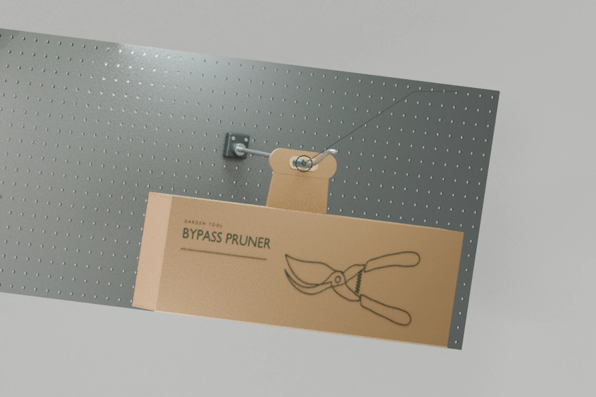

はじめから、正しく
管理されたOEM生産が、承認済みの仕様を再現性のある量産に変えます。

「ここの握りをもう少し細くできますか」「こちらが修正した輪郭です」

上下型のガイド穴は同じ基準で合わせます。公差は承認図に従います。

刃の鋼材もグリップの材料も、承認いただいた等級で調達します。

グリップの手触りと支点の動き。試作品で確かめてから量産を承認できます。

刃のかみ合わせとばねの戻りを、承認サンプルと照合します。

板紙の箱とパルプモールドの中敷き。販売先に応じて包材資料を確認します。

設計イメージです。実際の部品と製造工程は承認図に従います。
やり取りや図面の注記は開発例です。包装の表示は実際の材料と販売先に応じて確認します。
飛庄 · TOBISHO · ARS VS-8XZ · ARS · PDF管理されたOEM生産が、承認済みの仕様を再現性のある量産に変えます。
柔軟な生産計画が、材料・原産地・納期の変化を吸収します。
製品もブランドも市場も、お客様のものであり、当社のものではありません。
園芸・農作業の手工具、それも鍛造・成形の金属加工を中心に — 他社ブランドの背後でつくっています。電動工具は扱わず、流行を追うこともなく、自社の小売ブランドを持つこともありません。それがこの会社のすべてです。